R を可換環、I をイデアルとする。このとき、剰余環  が、整域や体となるイデアル I の満たすべき条件を考える。
が、整域や体となるイデアル I の満たすべき条件を考える。
 が整域であることは、以下のことと同値である。
が整域であることは、以下のことと同値である。
 命題
命題  により、
により、 が体であることと、
が体であることと、 の 0 でないイデアルは、
の 0 でないイデアルは、 のみであることは同値である。これは、言い換えると、R のイデアル J で I を真に含むものは、R に限られるということと同値であるから（練習問題参照）、I が R の極大イデアルであることと同値である。
のみであることは同値である。これは、言い換えると、R のイデアル J で I を真に含むものは、R に限られるということと同値であるから（練習問題参照）、I が R の極大イデアルであることと同値である。
I：極大イデアル 
 ：体
：体 
 ：整域 I：素イデアル。
：整域 I：素イデアル。
R を可換環とすると、上の定理から、零イデアル  が素イデアルであることと、R が整域であることが同値であり、また、
が素イデアルであることと、R が整域であることが同値であり、また、 が極大イデアルであることと、R が体であることが同値である。
が極大イデアルであることと、R が体であることが同値である。
定理  により、極大イデアルは、常に素イデアルだから、 を素イデアルとして、I が極大イデアルであることを示す。J を I を真に含む R のイデアルとする。R は、単項イデアル整域だから、 とおける。 だから、a = bc となる が存在する。 は、素イデアルだから または 。
により、極大イデアルは、常に素イデアルだから、 を素イデアルとして、I が極大イデアルであることを示す。J を I を真に含む R のイデアルとする。R は、単項イデアル整域だから、 とおける。 だから、a = bc となる が存在する。 は、素イデアルだから または 。 とすると、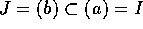 となり J が I を真に含むイデアルであることに反するから、。すなわち、c = ad となる が存在する。これより、
とすると、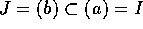 となり J が I を真に含むイデアルであることに反するから、。すなわち、c = ad となる が存在する。これより、
を得る。 だったから bd = 1 すなわち となり J = R となるから、I は極大イデアルである。
まず、 は、 と同値であることに注意する。これより、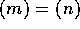 であることと、 は同値であることが分かる。さて、「 が極大であること」と、「 ならば、 または
は、 と同値であることに注意する。これより、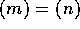 であることと、 は同値であることが分かる。さて、「 が極大であること」と、「 ならば、 または  であること」とは、同値である。これより、n の約数は、 であるか、または 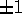 であるかのどちらかであることを得る。極大イデアルは、 とは異なるから、
であること」とは、同値である。これより、n の約数は、 であるか、または 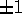 であるかのどちらかであることを得る。極大イデアルは、 とは異なるから、
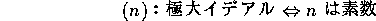
 は、単項イデアル整域であるから、命題
は、単項イデアル整域であるから、命題  より、零でないイデアルが極大イデアルであることと、素イデアルであることは、同値であることが分かる。
より、零でないイデアルが極大イデアルであることと、素イデアルであることは、同値であることが分かる。
この命題により、 が体であることと、整域であることと、n が素数であることは、全て同値であることもわかった。
 が定数の時は、上の３つのどの条件も満たさないから考えなくて良い。そこで、 とする。 は、単項イデアル整域であるから、
が定数の時は、上の３つのどの条件も満たさないから考えなくて良い。そこで、 とする。 は、単項イデアル整域であるから、 が極大イデアルであることと、素イデアルであることは、同値である。このことと、 が既約であることが同値であることを示す。
が極大イデアルであることと、素イデアルであることは、同値である。このことと、 が既約であることが同値であることを示す。
 を可約とする。すなわち、
を可約とする。すなわち、 、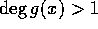、 とする。すると、
、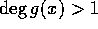、 とする。すると、
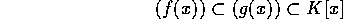
でどちらも等号は成り立たない。 だから、練習問題より以下が同値であることから明か。
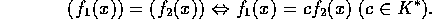
逆に、 は極大イデアルではないとする。 を を真に含みかつ
は極大イデアルではないとする。 を を真に含みかつ  とは異なるイデアルとする。すると、
とは異なるイデアルとする。すると、 とかけ、条件から、
とかけ、条件から、 は、可約であることが分かる。
は、可約であることが分かる。
次数の高い多項式について、既約かどうかはどのように判定すればよいのだろうか。実は、一般には非常に難しい。しかし、次の判定法は有効である。
可約として矛盾を導く。
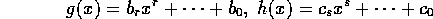
とする。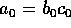 は仮定より p で割り切れるが、 では割り切れない。従って、p は、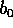 は割らないが、 は割ると仮定する。一方、 は仮定から p で割れないから、 も p で割れない。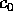 は p で割れるとしているから、今 i を 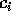 が p で割り切れない最小の整数とする。従って、
は割ると仮定する。一方、 は仮定から p で割れないから、 も p で割れない。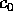 は p で割れるとしているから、今 i を 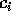 が p で割り切れない最小の整数とする。従って、
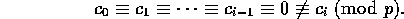
すると、
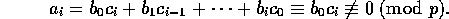
である。仮定から となり、これは、矛盾である。従って、 は既約である。
は既約である。
この命題は、 上既約かどうかの判定法であるが、実は、練習問題にもあるように、ガウスの補題（命題
上既約かどうかの判定法であるが、実は、練習問題にもあるように、ガウスの補題（命題  ）といわれるものにより
）といわれるものにより  上既約であることも分かる。
上既約であることも分かる。
例えば、、 は、 上（そして、 上）既約である。
上（そして、 上）既約である。